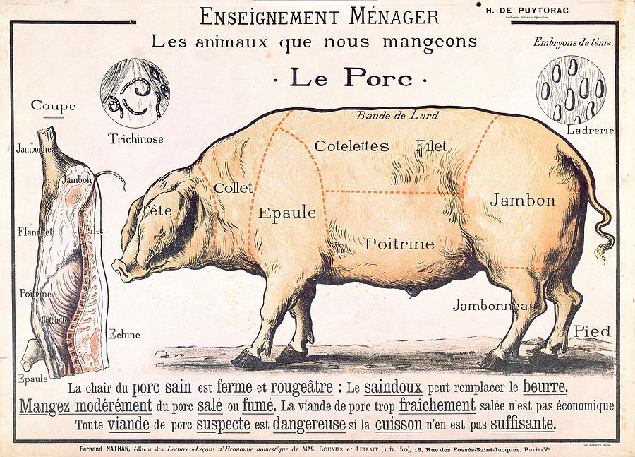

Hello Fellow Trotters!
So what’s this all about?Nose to Tail Fortnight raises awareness among Chefs and Foodies alike of the benefits of eating the whole animal and rediscovering the food that it surrounds.
The aim of the campaign is to:
- Reduce food waste involved in the meat and wider food chain
- Encourage greater respect for the food we eat
- Raise awareness of recipes and alternative methods of cooking that will help us enjoy all the varieties of meat and forgotten foods.
Well some of the more unpalatable sounding cuts of meat are actually the most palatable bits!
And for the more environmentally conscious among you; did you know that £440million of perfectly usable Pork goes into the rubbish bins each year?!!
Stop preaching start eating!
Grub Club are joining forces with Ethical Eats to curate delicious and quirky events to get foodies into the spirit of Nose to Tail, all supported by Slow Food London.
Learn how to butcher a whole pig or take a gastronomic journey through the noble and delicious sheep.


Videos
WHAT'S ON!
 |
Head, Shoulder, Veal and Toes, Veal and Toes In honour of London's very own Nose to Tail Week, The Wandering Chef is preparing a feast for the truest of meat lovers. Most butchers will graitutously hack at you meat just like the Ripper. more..14th Jun | 7:30pm - 11pm | 6 seats left |
£38.50
BOOK IT |
 |
2 Dinners 1 Lunch The second in our series of 2 Dinners 1 Lunch features the stunning Dexter cow and a selection of June’s finest seasonal produce. We have been aging the beef with Nathan at the Butchery as well as smoked in Peckham, run by Jonny at the Gowlett, who has got his hands on some beef which he has been curing and smoking. more..14th Jun | 7:30pm - 10pm | 15 seats left |
£41.80
BOOK IT |
|
2 Dinners 1 Lunch The second in our series of 2 Dinners 1 Lunch features the stunning Dexter cow and a selection of June’s finest seasonal produce. We have been aging the beef with Nathan at the Butchery as well as smoked in Peckham, run by Jonny at the Gowlett, who has got his hands on some beef which he has been curing and smoking. more..15th Jun | 7:30pm - 10pm | 4 seats left |
£41.80
BOOK IT |
 |
Beast and Barley Burst forth from the need to bring a truer form of meat enjoyment, and an appreciation for what beer can actually be, two fellows in South London Bates & Andy decided to start hosting bespoke butchery classes in various installations around the city. more..16th Jun | 12pm - 6pm | 30 seats left |
£55
BOOK IT |
|
2 Dinners 1 Lunch The second in our series of 2 Dinners 1 Lunch features the stunning Dexter cow and a selection of June’s finest seasonal produce. We have been aging the beef with Nathan at the Butchery as well as smoked in Peckham, run by Jonny at the Gowlett, who has got his hands on some beef which he has been curing and smoking. more..16th Jun | 1:30pm - 4pm | 13 seats left |
£41.80
BOOK IT |